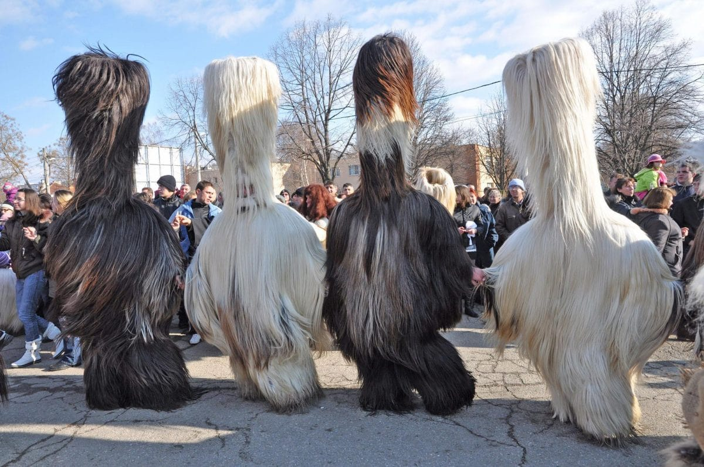
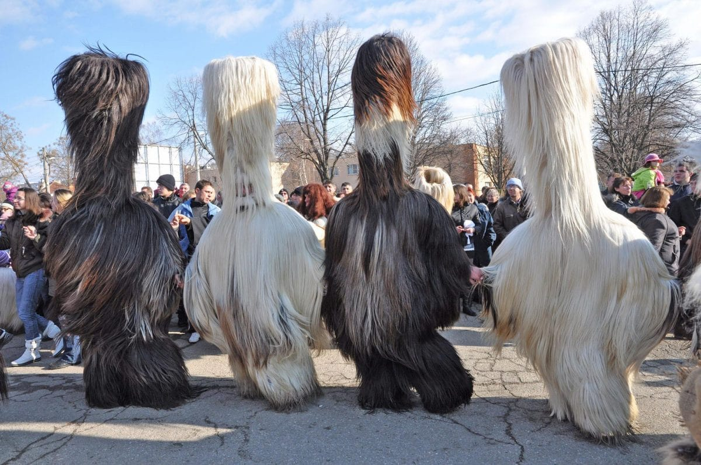

Passionate Junior Developer with a diverse background and a thirst for knowledge.
- Experienced Account Manager with a proven record in expanding markets through research and tenacity.
- Knowledge of the fundamentals in Python and C programming languages.
- Certified in Salesforce administration
- Familiar with collaboration tools like Jira, Confluence, Bitbucket, GitHub, and Git.
- Experience in qualitative and quantitative research.
- Fluent in German and English, with native proficiency in Bulgarian and conversational skills in Russian.
Well, it's like embarking on an adventure where I can unleash my creativity and problem-solving skills. Building visually appealing websites while solving design challenges sounds like an exciting puzzle to me. Plus, the web development industry offers endless opportunities for personal growth and staying ahead of the curve. So, tell me, what's not to be enthusiastic about when it comes to diving into a career as a web developer?"
Beyond the world of coding lies an adventurous soul within me that craves exploration and discovery. Picture me hiking through breathtaking landscapes, snorkeling in crystal-clear waters, and cycling through uncharted territories. Whether I'm navigating the intricacies of public transport in Tanzania, diving into the depths of Egypt, or conquering treacherous mountain roads in the Balkans, I thrive on the exhilaration that accompanies new experiences. But my appetite for adventure extends beyond thrill-seeking pursuits. I'm also a passionate learner of history and culture, constantly seeking to broaden my perspective and fuel my personal growth. Fluent in multiple languages and molded by the vibrant cultures of the Netherlands, Germany, and Bulgaria, I possess an innate adaptability that allows me to feel at home wherever I roam. Through my camping and backpacking escapades, I've learned to make the most of limited resources and seize every opportunity that crosses my path. This mindset seamlessly translates into my problem-solving approach within the realm of web development. Furthermore, my passion for research and writing finds expression in my role as a volunteer at the Foundation of Entrepreneurship, Culture, and Education. Here, I delve into thought-provoking topics encompassing society, culture, and politics, refining my skills as a researcher and analytical thinker. So, why am I passionate about joining a developer bootcamp? It's because I believe that the same sense of adventure, adaptability, and problem-solving mindset I bring to exploring the world can be channeled into crafting innovative and impactful digital solutions. I'm ready to embark on a new adventure, combining my diverse experiences and passion for learning to create extraordinary web experiences that leave a lasting impression.
EXPERIENCE
- Application Engineering Consultant DEC 2021 - OCT 2022
- Account Manager FEB 2017 - JAN 2021
- Sales Representative AUG 2016 - FEB 2017
- Account Manager MAR 2015 - JUNE 2016
EDUCATION
- Master of Arts 2014, the Netherlands
- Bachelor of Arts 2014, the Netherlands
- A-level 2007, Germany
CERTIFICATES
- Salesforce Administrator
- Advanced Programming in Python
Interesting fact about my country of origin...
Kukeri is a mesmerizing spectacle that unfolds every winter. Men adorned in elaborate and often terrifying costumes take to the streets, unleashing a symphony of loud noises and engaging in lively dances. The costumes themselves are adorned with vibrant ribbons, bells, and other decorative elements, creating a visual feast for all who witness it. These individuals, known as Kukeri, are the bearers of an ancient pagan tradition, striving to protect their community by warding off evil spirits and ushering in good fortune and fertility. The masks worn by the Kukeri hold a significant role in this tradition. Crafted from animal fur, they boast intricate designs featuring horns, fangs, and exaggerated facial expressions. These masks symbolize a wide array of mythical creatures and deities, their formidable appearance intended to strike fear into malevolent forces. During the kukeri procession, an enchanting cacophony ensues. The participants stomp their feet, jingle their bells, and wield wooden sticks or whips, creating a rhythmic symphony of sound. Their movements, carefully choreographed, give life to lively dances that symbolize the reawakening of nature and the cycle of life itself. This dynamic display, with its energetic rhythms and resounding echoes, is believed to chase away the grip of winter and pave the way for the vibrant arrival of spring.


 
